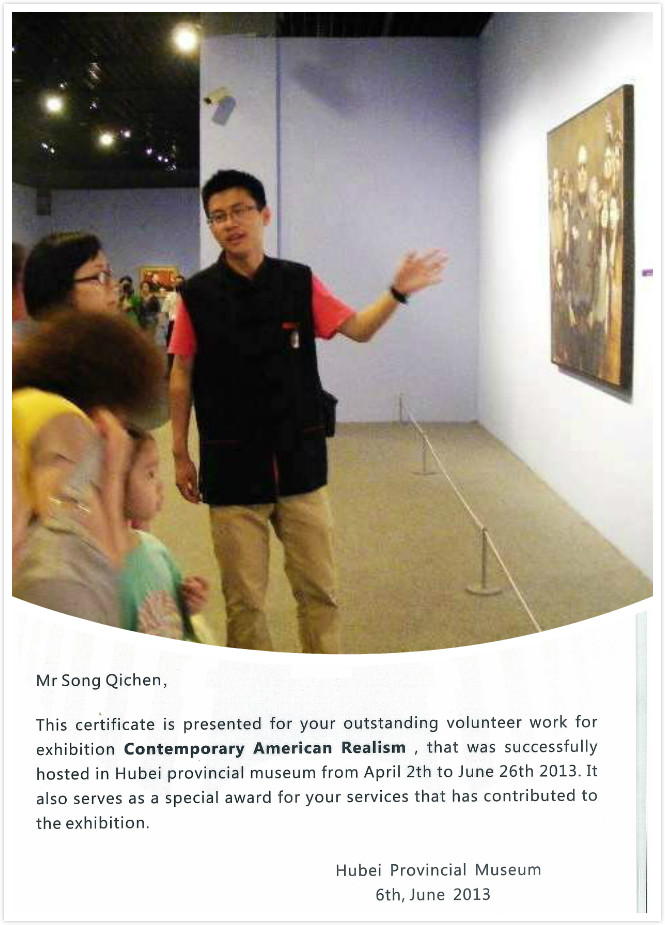

Photo Gallery
A 1,370-mile-cycling trip from Dali, Yunnan Province to Lhasa, Tibet
During the summer holiday of my sophomore year (2013), I took a 1,370-mile-cycling trip from Dali, Yunnan Province to Lhasa, Tibet. It was a tough journey, but now I can hardly remember any of the hardships and instead only the breath-taking natural scenes remains in my mind. When I was riding the bicycle, I had to push the pedals repeatedly. I was tired and bored, thinking about how many more miles there were ahead. However, it was the seemingly tedious and repeated movements that actually led me to my destination step by step. Without that I would never have the opportunity to enjoy those spectacular views.
Volunteer tour guide in Hubei Provincial Museum

Volunteer teacher in Guizhou Province
During the summer holiday of my freshman year (2012), I went to a rural village at Tongzi County, Guizhou Province. I served as an English teacher for local primary school students, whose ages range from 10 to 12. Though lack of education resource, they cherish every opportunity to acquire knowledge.